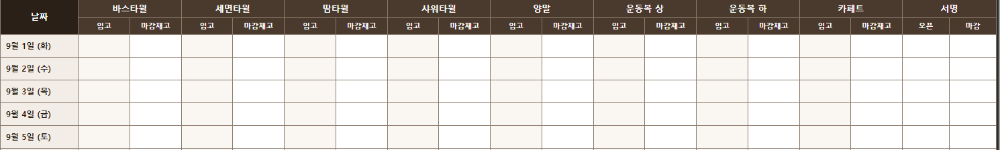

사우나 린넨(세탁물) 관리 · 9월 한 달 시범 안내 · 지원부 김훈 주임께 드리는 정리
WELLPERION
화면은 이미 다 만들어져 있습니다. 부탁드리는 것은 하루 두 번, 숫자를 적는 일뿐입니다 — 세탁물을 받을 때 「입고」, 마감할 때 「마감재고」. 사용량 계산·부족 표시·요일별 평균은 화면이 저절로 해 줍니다.
① 하루 두 번 · 한 번에 8칸 받을 때(21:00 무렵 배송) 품목별 받은 개수 8칸 · 마감할 때(영업 종료) 남은 개수 8칸. 세어 보는 시간을 빼면 적는 것 자체는 금방 끝납니다.
② 9월 한 달만 해 보는 것 한 달 해 보고 10월에 함께 봅니다. 이어갈지, 방식을 바꿀지 그때 같이 정합니다. 해 보다가 안 맞으면 바꾸면 됩니다.
| 품목 (8가지) | 부족 기준선 | 품목 | 부족 기준선 |
|---|---|---|---|
| 바스타월 | 70 장 | 양말 | 70 장 |
| 세면타월 | 380 장 | 운동복 상 | 70 장 |
| 땀타월 | 75 장 | 운동복 하 | 65 장 |
| 샤워타월 | 95 장 | 카페트 | 1 장 |
지원부 체계 페이지 → 「세탁물 관리」 탭. 휴대폰·PC 어느 쪽에서든 열립니다.
https://wellperion-cao.github.io/wellperion-automation/coo/check/지원부 체계.html
지금 화·수요일에 모자라면 창고에 둔 새 제품을 꺼내 쓰고 있습니다. 그런데 창고에 몇 장 남았는지는 아무도 모릅니다 — 바닥나는 날 그대로 막힙니다.
매일 도는 세탁물과 창고 보관분은 다른 숫자입니다. 세는 방법도 다릅니다 — 창고는 처음 한 번 세고, 그 뒤로는 꺼낼 때마다 몇 장 꺼냈는지만 적으면 됩니다. 화면의 「신품 투입」 칸이 그 자리입니다.
그러면 창고에 얼마 남았는지와 한 달에 새 제품을 몇 장 축냈는지가 함께 보입니다. 두 번째 숫자가 곧 손실액이고, 세탁 업체와 이야기할 때 가장 힘이 되는 근거입니다.
화요일·수요일에 회원께 드릴 세탁물이 모자라, 보관해 둔 새 제품을 꺼내 쓰고 있습니다. 그런데 지금은 몇 장 나가고 몇 장 돌아오는지 세는 것이 없어 원인을 못 찾고 있습니다 — 수요가 많은 것인지, 회수가 늦는 것인지, 어디선가 사라지는 것인지 가릴 수가 없습니다.
숫자가 쌓이면 세탁 업체와 이야기할 근거가 생깁니다. 요일별로 몇 장 들어오는지가 보이면, 어느 요일 배송을 늘려 달라고 할지가 정해집니다.
목표 — 화·수요일 바스타월 평균 입고 275장 이상 회복. 이 숫자는 업체 배송 배분을 고치기 위한 것이지, 누구를 평가하기 위한 것이 아닙니다.
| 보는 것 | 숫자가 매일 쌓이는가 · 부족 표시가 며칠에 몇 번 뜨는가 — 이 두 가지뿐입니다. |
|---|---|
| 안 보는 것 | 개인 평가는 하지 않습니다. 빈 날이 있어도 괜찮습니다 — 숫자는 배송 배분을 고치는 재료일 뿐입니다. |
| 10월에 | 한 달 치 숫자를 같이 보고, 이어갈지·바꿀지 함께 정합니다. |

1~15일 한 장 · 16일~말일 한 장. 그날 줄 오픈·마감 서명 칸에 사인하고, 장 아래 확인 칸이 김훈 주임님 자리입니다 — 보름에 한 번만 보시면 됩니다.
막히면 — 한 줄이면 됩니다 숫자가 안 맞거나 화면이 안 되면 웰리에게 한 줄만 주십시오. GM께 올려 함께 풉니다. 혼자 안고 가시는 일이 아닙니다.